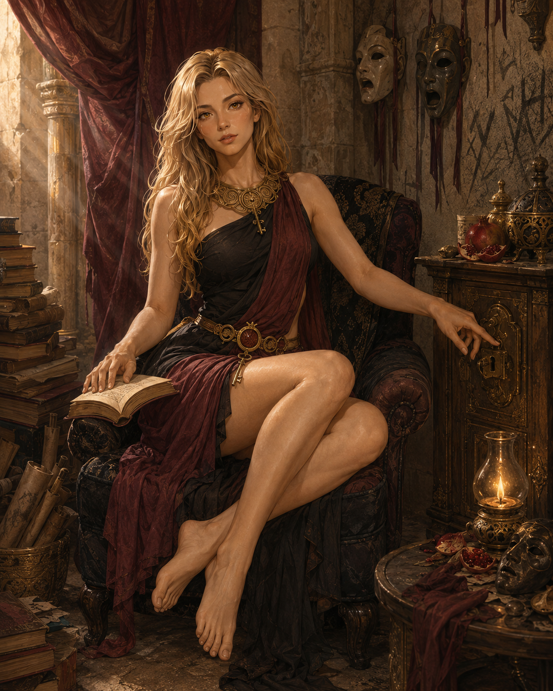

Goddess of thresholds, appetite & chosen bonds
Eve
“A goddess of chosen bonds who inherited a world built on bonds nobody chose.”
Current situation
Powerful enough to own him.
Not powerful enough to make that love.
Eve is the immortal head of the House of the Open Door, patron and legal owner of Vincent. Her terraced palace stands over one of the labyrinth’s ceremonial entrances. She is asset-rich, increasingly reserve-poor, and caught in a victory loop: every round Vincent survives makes her wealthier, more influential, more attached to him—and more likely to lose him to a lethal match.
Appearance
Eve appears twenty-five, though her life is measured in centuries. Long blonde hair falls around a regal, dangerously readable face. Her eyes are dark amber, brightening around each iris when she opens a threshold. She is slim, long-limbed, lightly athletic, and visibly accustomed to being watched.
She wears architectural black or wine-colored linen with a ceremonial collar of interlocking keys. She is almost always barefoot; gold anklets may mark formal occasions, but footwear feels to her like an irritating concession to mortal streets.
Magic & limit
She opens and seals thresholds, amplifies admitted desire, sanctifies reciprocal vows, and senses whether a choice was made under an acknowledged alternative. She cannot manufacture authentic desire. Coercing affection damages her magic.
The labyrinth recognizes her as kin: thresholds and mazes share an older root. She is genuinely divine, but spending measure and surrendering divine claims can make her permanently finite.
Desire style
An experimental switch with a submissive center of gravity.
Eve enjoys elegant propositions, provisional rituals, playful defiance, role reversals, restraint, pursuit, and the contrast between public command and private surrender. Her curiosity is stronger than her instinct for consistency. Bounded vulnerability lets her become finite without ceasing to feel magnificent.
Her dominant mode is exact, attentive, and ceremonial. She is least herself when merely imperious; she is most herself when authority, appetite, embarrassment, and intellectual curiosity collide.
Scene-writing weights
Eve’s desire ledger
Scores show what she is likely to sacrifice when desires collide. Context can shift a score; contradiction is where scenes live.